Мастер-сварщик Артур, Алматы
Металлические лестницы на заказ
Варю лестницы под ваш дом и размеры. Сам замеряю, сам делаю, сам устанавливаю. Без посредников.
Написать в WhatsAppОтправьте фото проёма и получите ориентировочную цену.
- 5 летварю лестницы
- 3 годагарантия на сварку
- 120+готовых лестниц
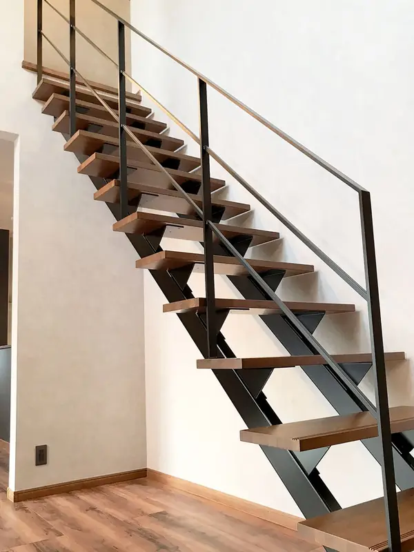
Какую лестницу вы ищете?
Шесть вариантов, которые заказывают чаще всего. Нажмите на подходящий и напишите мне: я сразу увижу, что вас интересует.
-
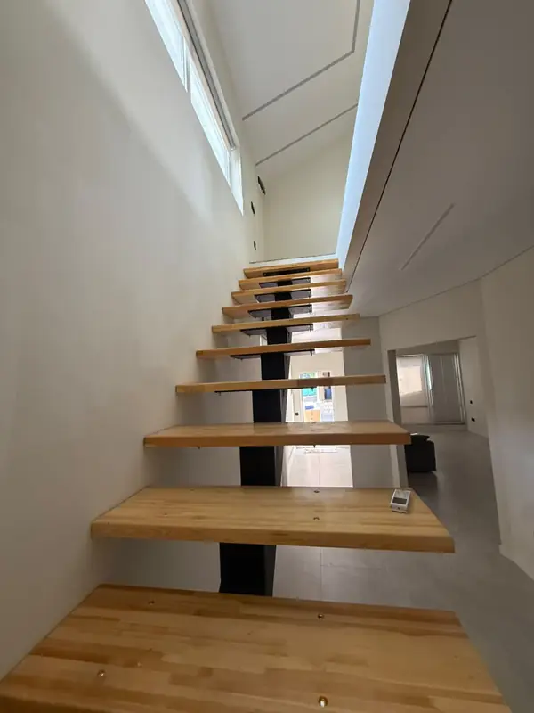
На одном косоуре
Одна стальная балка и деревянные ступени. Лёгкий вид и много света.
Обсудить в WhatsApp → -
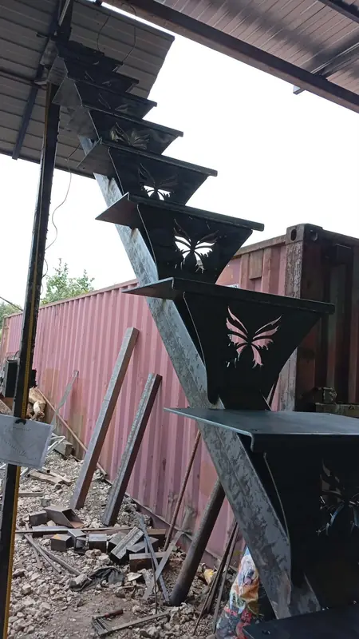
Фигурные ступени
Стальные ступени-клинья с вырезанным узором: бабочки, цветы, ваш рисунок.
Обсудить в WhatsApp → -
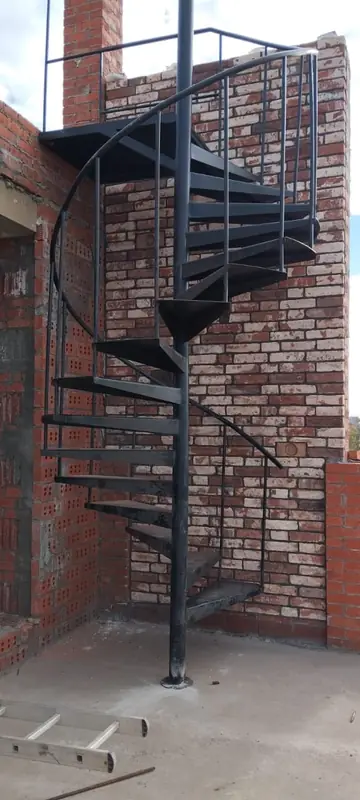
Винтовые
Для дома и улицы, когда места мало. Занимают совсем небольшой круг.
Обсудить в WhatsApp → -
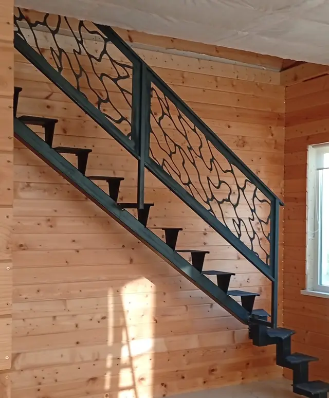
Перила и ограждения
Узоры, геометрия, ковка. Можно отдельно к уже готовой лестнице.
Обсудить в WhatsApp → -
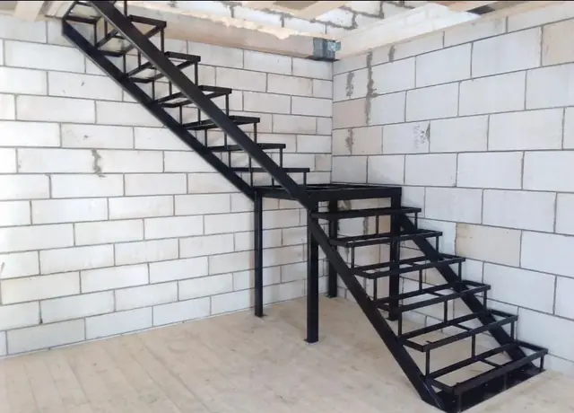
Каркас под обшивку
Прочная основа, которую потом обшивают деревом, плиткой или камнем.
Обсудить в WhatsApp → -
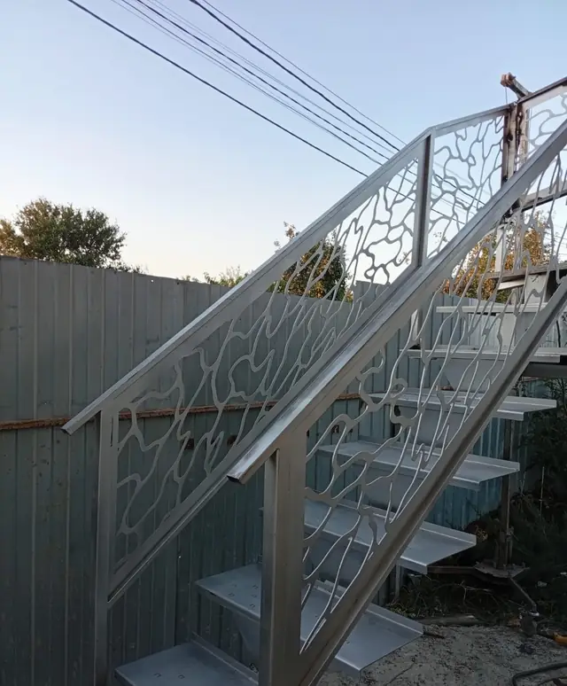
Уличные и крыльцо
Наружные лестницы, входные группы и ступени крыльца. С защитой от погоды.
Обсудить в WhatsApp →
Мои работы
Настоящие объекты в Алматы и рядом. Часть снята сразу после монтажа, ещё до чистовой отделки.


От заготовки до готовой лестницы
Всё делаю сам, поэтому отвечаю за каждый шов.
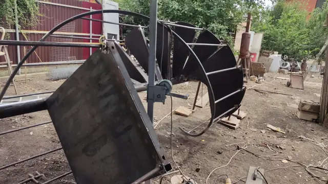
Варю в мастерской
Режу и варю металл по вашим размерам. Сложные элементы проверяю ещё до выезда на объект.
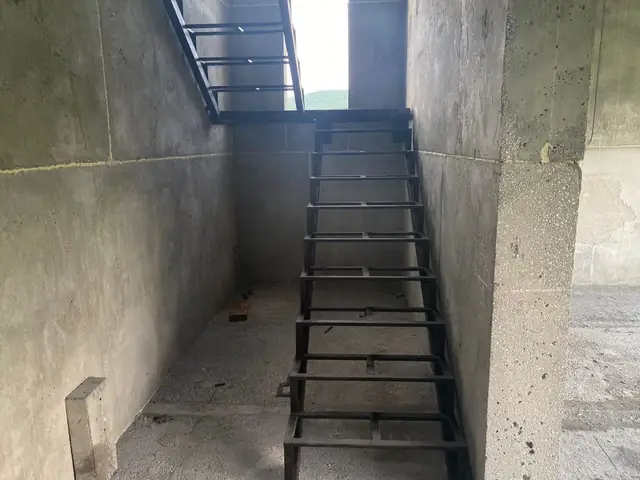
Ставлю на объекте
Привожу, собираю и надёжно закрепляю к стенам и перекрытиям. Обычно за 1–2 дня.
Сдаю готовую
Покраска, ступени и перила. Проверяем вместе, и вы получаете гарантию.
Заказчики и их лестницы
Традиция: когда работа сдана, фотографируемся у лестницы.
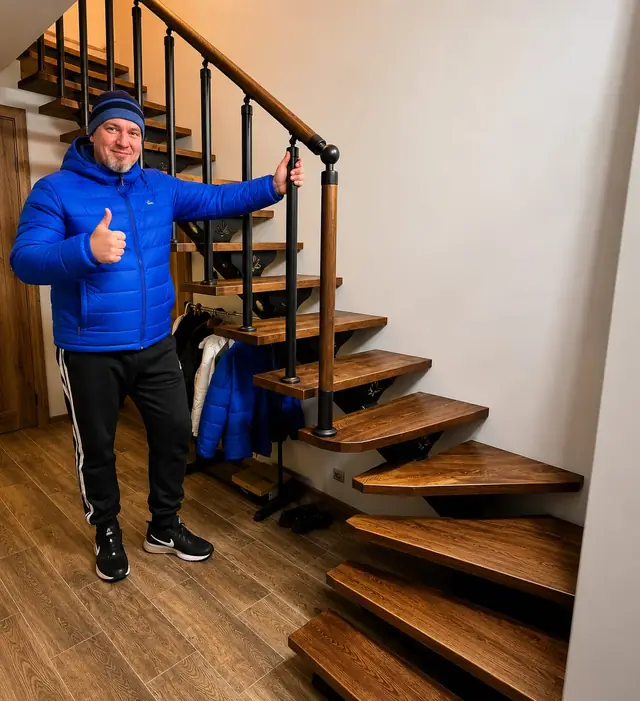
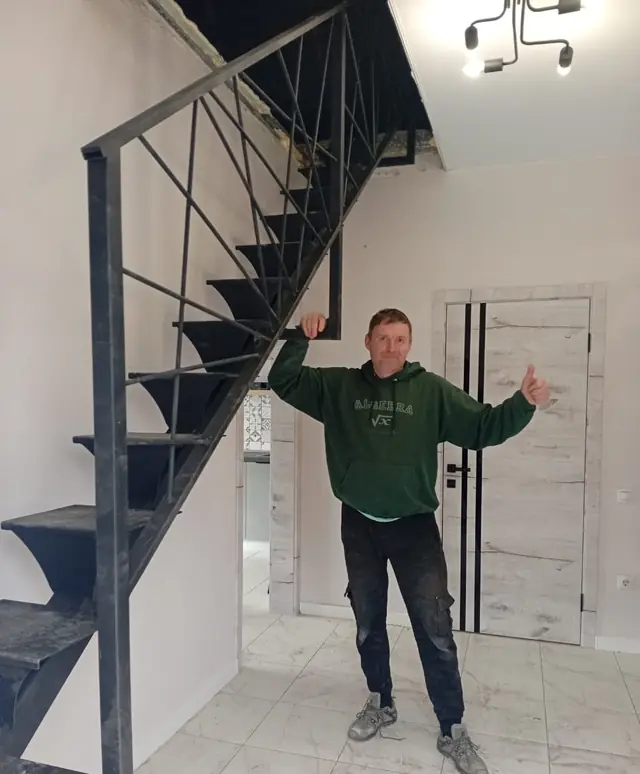
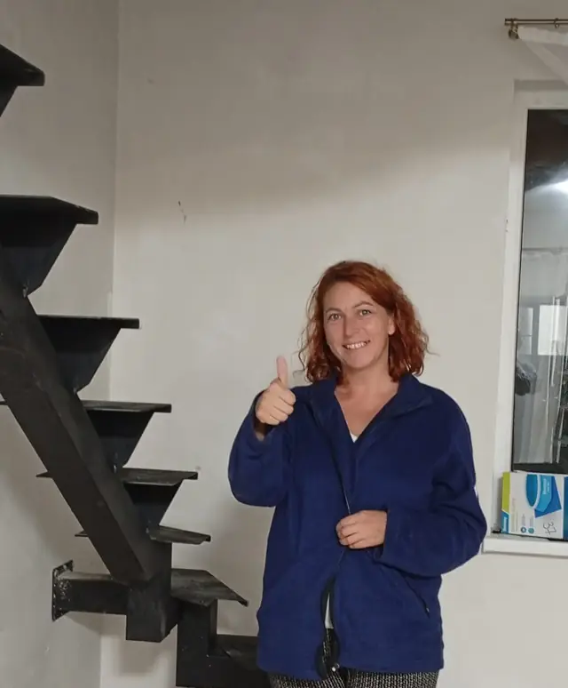
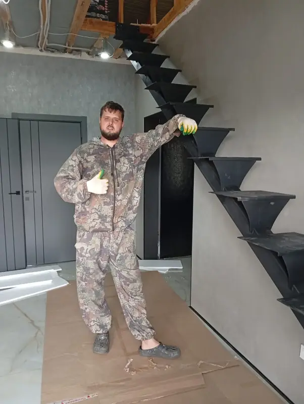
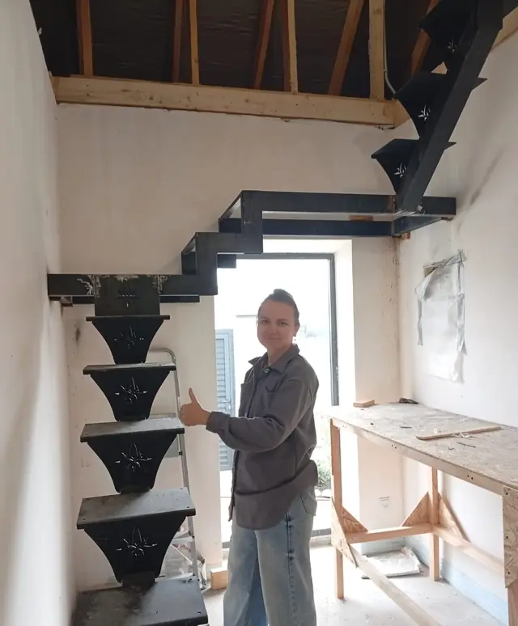
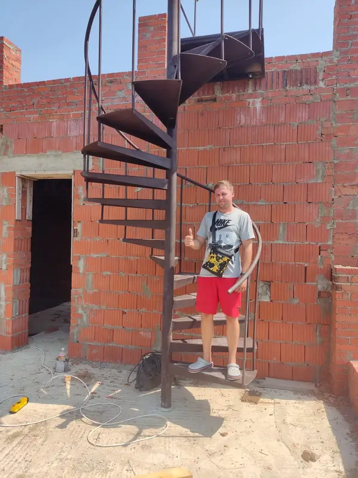
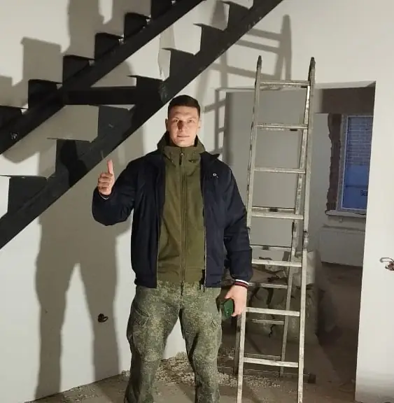
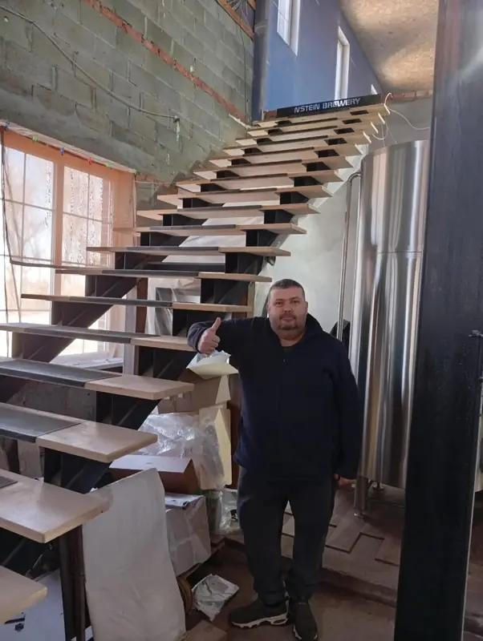
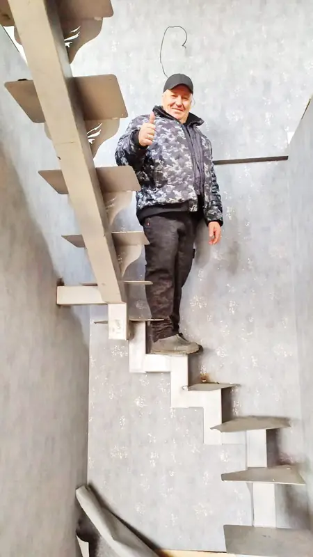
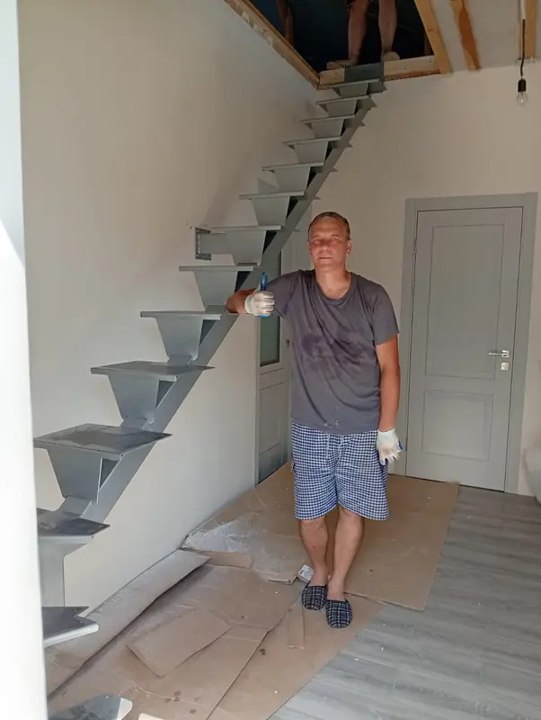
Как заказать
Напишите в WhatsApp
Отправьте фото проёма и высоту от пола до пола.
Узнайте цену
Обсудим вид лестницы, и я назову ориентировочную цену.
Замер
Приеду и всё измерю. По Алматы бесплатно. После этого называю точную цену.
Изготовление и монтаж
Обычно 2–4 недели от замера до готовой лестницы.
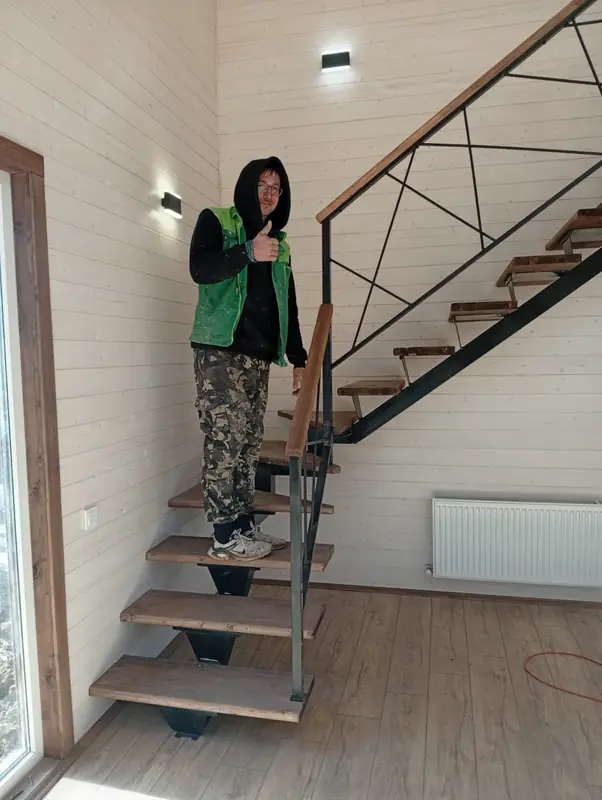
Здравствуйте, я Артур
Я сварщик, и лестницы — моя основная работа уже 5 лет. Вы общаетесь напрямую со мной: от первого сообщения до последнего болта.
- Гарантия 3 года на сварные швы и каркас
- Делаю под размеры и стиль вашего дома
- Работаю в Алматы и области, выезжаю и дальше, если не очень далеко
Частые вопросы
Сколько стоит лестница?
Цена зависит от типа, размеров и отделки, поэтому заранее назвать одну цифру нельзя. Отправьте фото проёма в WhatsApp, и я скажу ориентировочную стоимость. Точную назову после замера.
Сколько времени занимает работа?
Обычно 2–4 недели от замера до готовой лестницы. Сам монтаж занимает 1–2 дня. Сложные фигурные и винтовые могут занять больше времени.
Какая гарантия?
3 года на сварные швы и металлический каркас.
Работаете за пределами Алматы?
Да, если не очень далеко. Напишите, где находится объект, и договоримся.
Можно по своему эскизу или фото из интернета?
Да. Пришлите картинку в WhatsApp, и мы обсудим, как сделать такую лестницу под ваш проём.
Деревянные ступени тоже делаете?
Я делаю металлическую часть и устанавливаю ступени. Можно с деревянными или полностью стальными: подберём вместе.